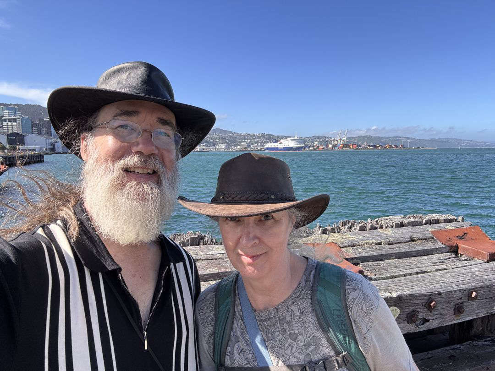
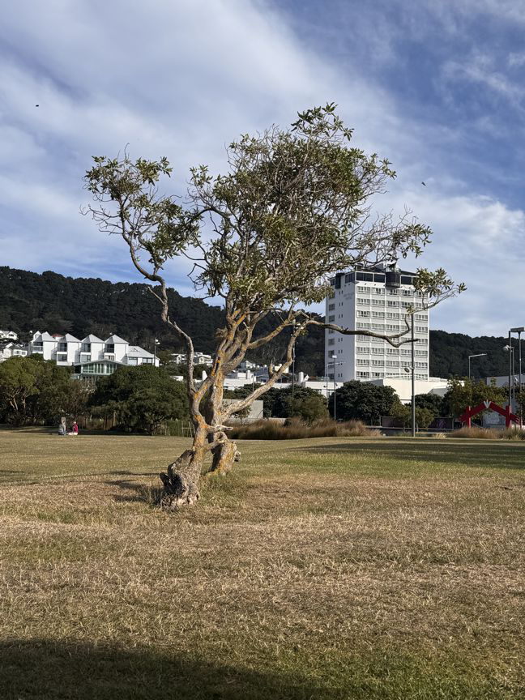

to Wellington New Zealand!
Flew on Qantas Airlines Sydney to Wellington.


Using the https://thetruesize.com/ Web-site to compare New Zealand to the West Coast.
Dunedin in Southern New Zealand is about the same negative lattitude as Seattle.

Got picked up by another our excellent friend, Clare, who we had met a year earlier at our AirBnB in Fairbanks, AK

We haunt "OP" shops (aka thrift stores) looking for bargains. This is the "Tip Shop", right at the garbage dump.

The Control Tower was built with the prevailing wind in mind.

Downtown along the bay.

Runaway tree! In a park downtown.

Birthday Sundae!

Took the WETA Workshop Lord of the Rings Tour!
Our guide was Marc, who played multiple Elves, and the Black Rider in the forest when the stunt-man broke his ankle.


This is the first scene filmed, near Wellington in a park, when the hobbits hid from the black rider.


The Workshop tour featured some life-sized dwarves to get photos with.

Later in the tour was the place where Rivendell shots were filmed
They rebuilt the entrance to Rivendell slightly smaller to preserve the forest

Ancient tree

Mr Bilbo's Trolls!

Joke map of Australasia. New Zealandia!

Next, taking the Bumble on the ferry to Picton, South Island!

(We'll be back to Wellington February 20, and at the end of March!)